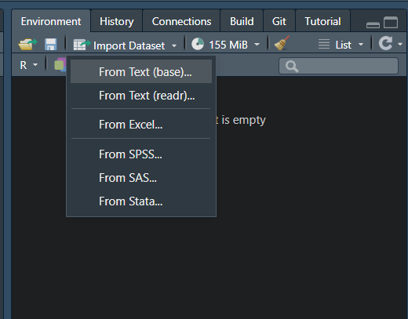
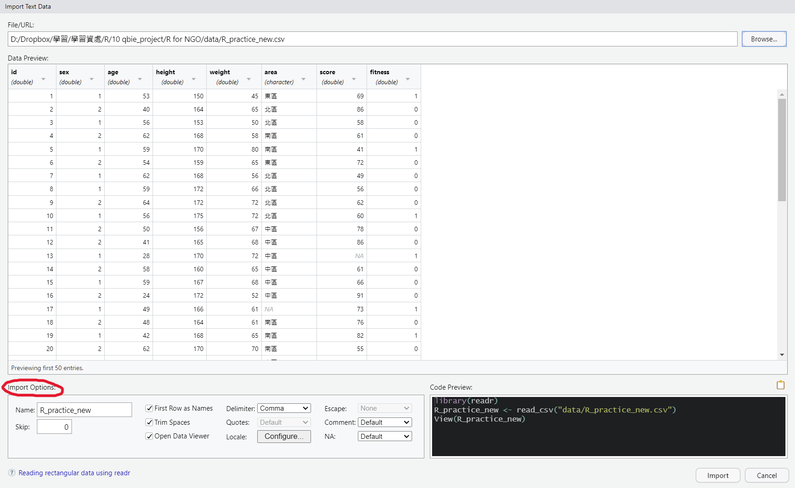
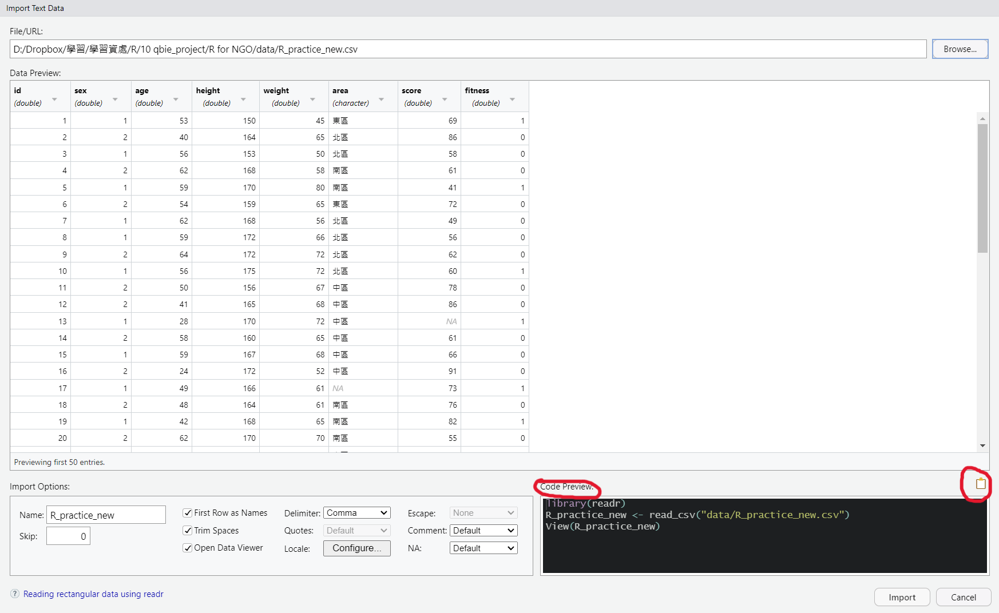
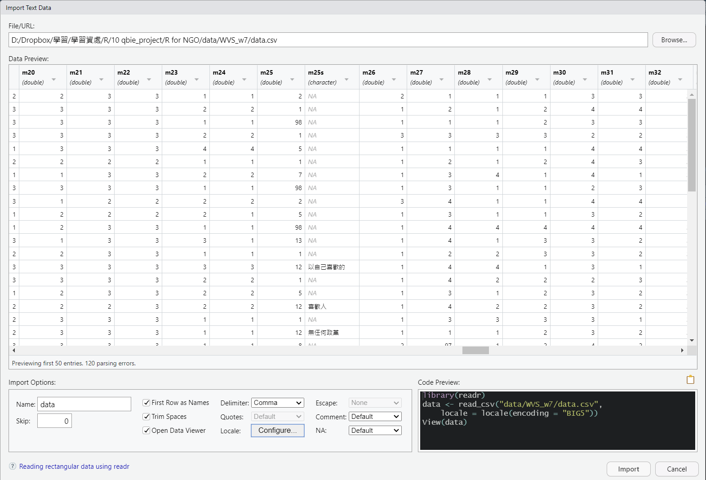
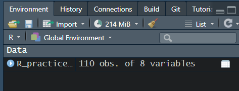
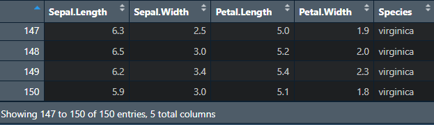
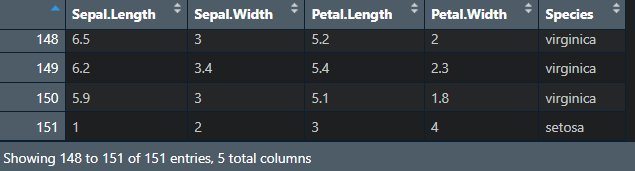
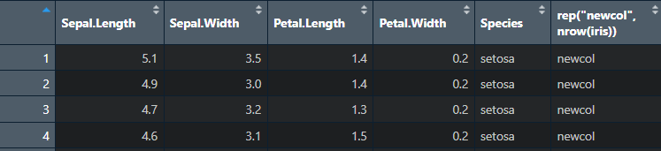

Chapter 5 應用篇_資料讀取、匯出、合併與瀏覽
5.1 設定工作路徑
首先可以先設定放檔案路徑，(需要注意的是在路徑上平常多是使用\，但在R中需要使用/)
設定好路徑之後，讀取或匯出資料就只需要寫檔案名稱，不用加上前面路徑，會直接存在設定路徑的資料夾中，若檔案需要放在另外位置，也只須在檔名前面加上需要存取的位置
可以對需要存放的資料夾按
右鍵->內容->位置或是右鍵->複製路徑
查看資料夾的路徑
若是使用R Project打開，除非需要更換路徑，不然預設就是R Project的資料夾
# 設定工作路徑
setwd("D:/Dropbox/R_for_NGO")
# 顯示目前的工作路徑
getwd()5.2 讀取資料
常見的Open Data儲存方式包括
- 表格式檔案（包含 CSV 資料(.csv)、Excel 試算表(.xlsx)、spss(.sav)、stata(.dta)、SAS(.sas7bdat)）
- 非表格式檔案（包含 TXT 資料、JSON 資料、XML資料）
但大多數的公開資料都可以直接下載CSV檔案，或是調查資料大多都有提供spss、stata或SAS的檔案格式，因此在此先介紹這個較簡單的方式，
另外其他透過網路爬蟲、API或JSON與XML格式的資料，暫不多做介紹，有興趣者可以到以下連結查看參考1、參考2、參考3
5.2.1 Import Dataset功能 (RStudio)
若是檔案為可直接下載(表格式檔案式)，包括文字檔、其他軟體的檔案格式，
在RStudio當中有提供直接點選讀取資料的功能，包括純文字.txt、.cvs、或Excel試算表.xslx、spss、SAS、Stata的檔案格式
下圖以讀取WVS_w7的.cvs檔案為範例，
1. 點選Import Dataset -> From Text(readr)...
2. 出現視窗後點選左上角Browse，點選要輸入的檔案
3. 之後空白處會載入部分資料提供預覽，可以根據需求更改參數(左下角)
4. 右下角也有提供程式碼，且就是根據你點選的方式呈現，可以點選完後複製程式碼(右下有個類似紙的圖案)，這樣就可以留下讀檔案的紀錄
5. 若檔案中文字有亂碼也是在左下更改




# 讀取WVS_w7的.cvs檔案
library(readr)
data <- read_csv("data/WVS_w7/data.csv")
View(data)
# 但此時文字可能會有亂碼狀況，可以設定編碼
library(readr)
data <- read_csv("data/WVS_w7/data.csv",
locale = locale(encoding = "BIG5"))
View(data)
# 上面預設是讀取後命名為data，也可以自行更改
WVS_w7 <- read_csv("data/WVS_w7/data.csv")
# 或著讀取WVS_w7的.dta檔案
library(haven)
data <- read_dta("data/WVS_w7/data.dta")
View(data)5.3 匯出資料
在R處理完檔案後，通常會將資料匯出成其他另外檔案提供其他人使用，較常匯出使用的檔案格式tab分隔的文字檔.txt或是逗號分隔的文字檔.csv，有一些格式上的呈現可以另外再進行參數設定，這邊只會介紹簡單的匯出形式，若要調整可參考該函數的help文件
5.3.1 R物件.rds
若是處理到一半，之後還要繼續用R處理，可以先匯出成R物件檔案.rds，較方便自己下次處理，後續最後處理完成再轉換成其他常見檔案
# 取得R內建資料
data(iris)
saveRDS(iris, "iris.rds") ## 前面是data名稱、後面是要存的檔案名稱5.3.2 文字檔.txt
# 查詢write.table的help文件
?write.table
# 取得R內建資料
data(iris)
# 匯出成.txt檔案
write.table(iris, file = "iris.txt", sep = ",", row.names = F, col.names = T)write.table的help文件，文件後面也有針對每個參數的描述 
5.4 簡單資料合併
在資料當中有時需要新增整列或整行的資料，
可以使用rbind()和cbind()來完成(vector或是data.frame都適用)
若今天想在iris資料中加入新的一列(原先有150筆資料新增一筆)
# vector
rbind(c(1, 2, 3), ## 第一列
c("apple", "banana", "cat") ## 第二列
)
# 取得R內建資料
data(iris)
names(iris)
# 新增成另一個資料
iris_nrow <- rbind(iris, ## 資料框
c(1, 2, 3, 4, "setosa") ## 新增一列
)
## or
# 直接更換原先的資料
iris <- rbind(iris, #資料框
c(1, 2, 3, 4, "setosa") ## 新增一列
) 

若今天想在iris資料中加入新的一行(原先有四行)
# vector
cbind(c(1, 2, 3), ## 第一行
c("apple", "banana", "cat") ## 第二行
)
# 取得R內建資料
data(iris)
names(iris)
# 新增成另一個資料
iris_newcol <- cbind(iris, ## 資料框
rep("newcol", nrow(iris)) ## 自行新增一行、或是有對應的資料可以直接新增
) 
5.5 資料瀏覽
若已經將資料讀取到R裡面，一開始需要看一下或檢查資料的大致狀況如何
以內建資料iris為例:
5.5.1 資料屬性查詢函數
# 讀取WVS_w7資料
library(readr)
WVS_w7 <- read_csv("data/WVS_w7/data.csv",
locale = locale(encoding = "BIG5"))
# 查看資料內容
View(WVS_w7) ## 查看資料
head(WVS_w7) ## 查看前6筆資料內容
tail(WVS_w7) ## 查看後6筆資料內容
# 查看資料各種名稱
names(WVS_w7) ## 顯示資料名稱
colnames(WVS_w7) ## 顯示欄位名稱
rownames(WVS_w7) ## 顯示列名稱(若沒有則顯示編號)
dimnames(WVS_w7) ## 先顯示列再顯示欄位的名稱
# 查看資料長度
length(WVS_w7) ## 顯示資料查度(若為data.frame會顯示欄位數)
dim(WVS_w7) ## 先顯示列再顯示欄位的長度
# 顯示資料的架構資訊
str(WVS_w7)
class(WVS_w7$a01) ## 數值資料
class(WVS_w7$m25s) ## 文字資料
# 簡單查看資料分配
table(WVS_w7$a01) ## a01(性別)次數分配
table(WVS_w7$m25s) ## m25s(投票給政黨選擇其他的回答)次數分配
# 上述函數也可以合併使用
## 顯示前6筆資料的a01(性別)次數分配
table(head(WVS_w7)$a01)5.5.2 資料排序
另外也可以對向量或資料進行排序
nosort <- c(1, 6, 5, 8, 2, 3)
sort(nosort) ## 預設是由小排到大
sort(nosort, decreasing = T) ## 由大排到小
# 讀取WVS_w7資料
library(readr)
WVS_w7 <- read_csv("data/WVS_w7/data.csv",
locale = locale(encoding = "BIG5"))
head(WVS_w7$a01) ## 顯示a01(性別)前6筆資料
head(sort(WVS_w7$a01)) ## 顯示排序之後的Sepal.Width前6筆資料
head(order(WVS_w7$a01)) ## 顯示排序之後前6筆資料的原始位置(由小到大)
head(order(WVS_w7$a01, decreasing = T)) ## 顯示排序之後前6筆資料的原始位置(由大到小)
## 根據排序之後的a01(性別)前6筆資料的原始位置，來排序整個資料
head(WVS_w7[order(WVS_w7$a01), ]) 5.5.3 用dplyr瀏覽
dplyr套件有許多函數可以更方便的瀏覽或操作data.frame資料，在此先介紹部分關於瀏覽相關功能，之後章節會進一步介紹處理資料功能，
dplyr cheat sheet、參考1、參考2、參考3、參考4
select(): 可以選擇要分析的欄位(Column)filter(): 可以選擇要分析的觀察值(Row)arrange(): 用來排序觀察值group_by(): 用來分組瀏覽
# 讀取WVS_w7資料
library(readr)
WVS_w7 <- read_csv("data/WVS_w7/data.csv",
locale = locale(encoding = "BIG5"))
# 載入套件
library(tidyverse) ## 整合性的資料分析(包括dplyr)
## OR
library(dplyr) ## 也可以直接載入dplyr
# select() 若只想要查看欄位 id、a01(性別)
WVS_w7 %>%
select(id, a01)
# filter() 若只想要查看觀察值 a01(性別) = 1(男性)
WVS_w7 %>%
filter(a01 == 1)
# arrange() 若想根據a01(性別)和id排序(先排序a01再排id)
WVS_w7 %>%
arrange(a01, id)
# group_by() 若想根據a01(性別)進行分組來看男女性不同的年齡平均
## 通常是與summarise()結合使用，來查看描述統計
WVS_w7 %>%
group_by(a01) %>%
summarise(age_mean = mean(a03))5.5.4 其他
5.5.4.1 data.table
data.table是data.frame資料格式的延伸，在處理或讀取資料上比data.frame還來的有效率，
這部分進階的可以參考1